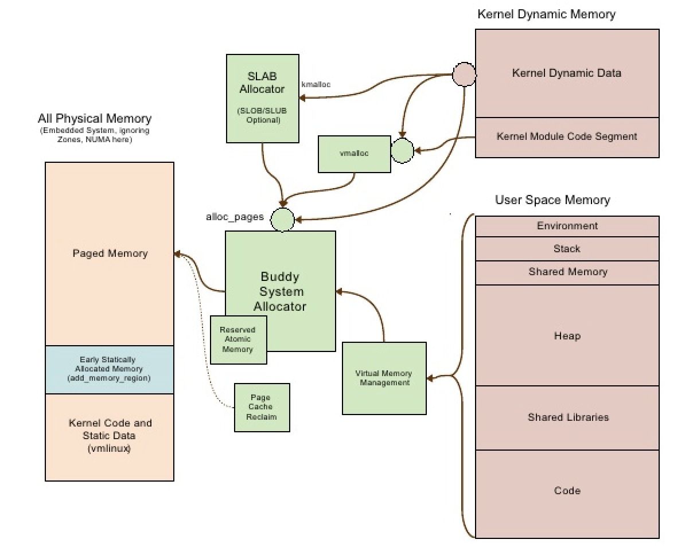
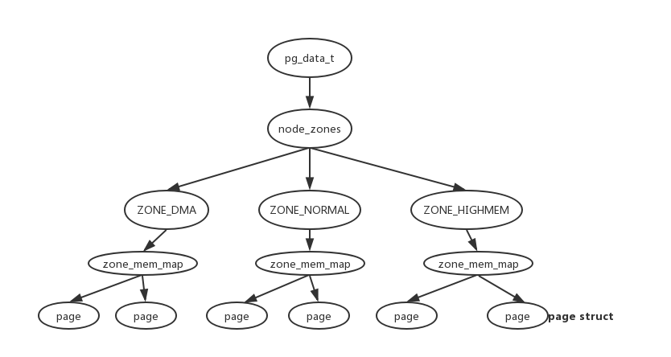
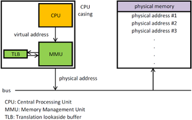
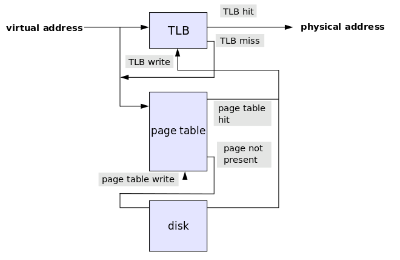

面向基础底层的知识，深入学习linux内存分配，虚拟内存管理，操作系统等相关知识。基于linux内核2.6版本。
“咬定青山不放松，立根原在破岩中。千磨万击还坚韧，任尔东西南北风。” -- 郑板桥 《竹石》
首先介绍一下概况性的观点，然后继续深入实现，关于内存管理机制，有个比较通用的观点，即为了高效的管理对象，通常会使用类似于内存池(对象池)的概念。例如：
内存管理的高效性：
0x00100000地址开始 (低地址)Page Fault即 缺页中断, CPU则会在物理内存(RAM)中寻找一个空闲的页, 并更新PTE。如果没有可用的空闲页，则CPU会选择PTE页表中的页，置换到磁盘上并在PTE页面设置标志，这就是通常所说的页面调度(paging)，将内存页换出到磁盘或者swap空间。（软件层面，虚拟内存）自上而下，介绍linux内存分配的整体架构
整体架构如下图所示，结合图示介绍几个基本概念：
用户内存空间
首先内存空间分为用户内存空间 和 内核内存空间, 用户内存空间也称为进程的地址空间，即对于每个用户进程可见。用户内存空间由低地址到高地址依次为:
内核内存空间
内核不能像用户空间那样奢侈的使用内存，内核空间通过对内存化分不同的区域来管理内存，通常划分的区域为ZONE_DMA,ZONE_NORMAL,ZONE_HIGHEM, 在每个区域中又通过slab层来管理内存。内核管理内存的最小单位是物理页，通常在32位体系结构中支持4kb的物理页，内核直接管理物理页，内核管理的内存是不会出现换出的情况的。
下图可以看到内核分配内存主要有两组接口函数，kmalloc kfree, vmalloc vfree
内核在管理栈空间时，使用了4kb或8kb比较小的栈来管理，并使用独立的中断栈对每个进程提供中断处理程序的栈，提供中断处理的效率。

总而言之：整体架构上，对于用户内存空间linux使用我们所熟知的虚拟内存管理的方式对内存进行管理，而对于内核使用Slab或者vmalloc的方式对内存进行管理。在此之上，liunx统一使用Buddy System提供了更加灵活的内存管理方式。
Slab 和 Buddy 是linux内核中基础的内存分配器，相辅相成，各自负责不同的职责。
Slab allocator: 具有相同大小的内存集合，通过一次性申请较大的内存空间，并将其等分为大小相同的块，来避免内存碎片。
Buddy system 伙伴系统:即分配的每个对象都带有一个buddy伙伴，当对象被释放时，伙伴系统会将其内存进行合并。当有小对象需要分配内存时，伙伴系统将会把大内存块分割成小内存块分配出去。伙伴系统buddy system对内存块的切分合并的思想，主要为了内存分配和归还的复用（re-use）。
总而言之：
Slab：申请的大的内存块会被划分成相等大小的块，以链表的形式存储维护，不会对内存块进行合并和分隔，对于频繁固定大小内存的分配和释放十分高效。slab会以高速缓存组的形式管理诸如task struct,inode struct这些固定大小而又频繁使用的数据结构。Buddy: 按需分配不同大小的内存，分配和归还涉及内存块的合并和分割linux内核内存管理提供了灵活的伙伴内存管理系统Buddy allocator system，在此之上并提供了不同的Slab管理不同的结构，例如：task_struct, inode_struct 等等。
Buddy allocator或Buddy system是一种经典内存分配算法, 分离适配(segregated fit), 其主要思想是将内存按2的幂次划分，并搜索其内存空间找到最佳适配的内存。搜索复杂度为O(logN)。其缺点是如果要分配66单位的大小，则需要划分出128大小的块。Buddy allocator在linux系统中主要是为了分配动态大小的对象而设计的，对于固定大小且分配频率高的对象使用slab分配器。
Slab Buddy为linux内核管理内存的方式，在其底层对于每个物理页使用高速缓存组zone和物理页page的方式进行管理。下图即为：
对于linux内核中每个物理页，都由一个page struct用来维护。page struct维护了当前页的一些信息。并使用mem_map对进程的每个虚拟页到物理页做映射管理。mem_map称为页描述符数组。

虚拟内存的实现中使用了分页(paging)技术, 其依赖于硬件MMU的实现。首先虚拟地址被送到MMU中，MMU将虚拟地址转化成物理地址，再送到内存总线中，在主从中获取实际物理地址，或者在具体的硬件设备中获取实际物理地址。然后对物理地址进行相关的操作（读写）
MMU是一种硬件电路实现，包含主要两个部件：分段部件，分页部件。
基址寄存器(Page Table Base Register) PTBR + 虚拟页偏移(Virtual Page Offset) VPO + 虚拟页号(Virtual Page Number) VPN

页表(page table): 是虚拟内存实现的操作系统中存储物理地址到虚拟地址转化的数据结构。其工作原理如下图所示：虚拟地址首先被传送到MMU中查看TLB缓存，如果缓存命中(TLB hit)则返回物理地址，否则(TLB miss) MMU或操作系统会在页表(page table)中查找是否存在(a page walk)，如果命中则返回物理地址，并写回TLB缓存。
注：虽然页表属于操作系统层面，MMU属于硬件CPU层面，但是页表与MMU不是相互独立的，页表与MMU是 协同工作，图中TLB部分即为MMU部分，即MMU可以通过页表来查找对应的物理地址，页表的设计遵循计算机架构手册（x86-64）。因此操作系统开发者需要保证页表设计的正确性。

页表转化失败(Translation failures)主要有如下几个原因，并触发缺页中断(page fault)
segmentation fault并触发相应的错误处理程序当发生页表转化失败的情况后，操作系统会分情况进行如下操作：
在进行页换出(page out)操作时，需要用到 页置换算法(page replacement algorithm)
页表的大小在32位操作系统4kb页大小需要仅仅4MB去存储。因为虚拟地址空间为2^32,每个页的大小为4KB,即2^12，32位的操作系统，可以支持页的个数为2^32/2^12=2^20, 32位虚拟地址需要4bytes来表示，所有需要页表大小为2^20*4=4MB.
页置换算法的主要作用就是发生缺页中断 (在虚拟地址对应的页不在主存中这一种情况)时，操作系统必须选择一个页面将其换出，以便为即将调入的页面腾出空间。
常见的有LRU(Least recently used)，LFU(Least frequently used)，NRU(Not recently used)等等。
通过学习内存管理，可以很好的了解到程序在运行时的行为，以及操作系统的一些行为，可以使开发者写代码时，更加游刃有余。